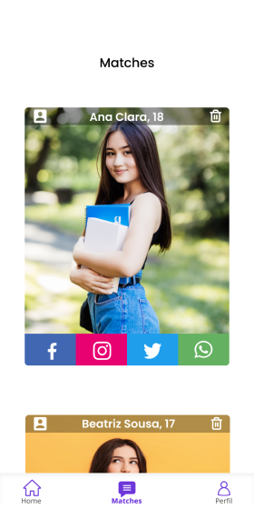

Crie novas conexões enquanto aprende!
Conheça o projeto feitos por alunos para alunos do ensino médio. Vamos láSobre o projeto
A ideia do projeto surgiu quando percebemos que nós, alunos,
aprendemos melhor ainda ajudando uns aos outros.
O projeto lidará com a procura e encontro de outros alunos, onde ambos
poderão ensinar e aprender simultaneamente, de forma a desenvolver
cada vez mais sua autonomia nos estudos.
O sistema de procura funcionará com base nos dados que o aluno inserir
nas suas preferências, que são algumas de suas informações escolares
juntamente com as metérias que o mesmo tem interesse em estudar,
podendo editá-las a qualquer momento.
Como o aplicativo pode te ajudar?
Quem ensina também aprende.
Uma das melhores formas de relembrar e fixar o que foi aprendido é passando isso para outra pessoa.
Faça novas amizades com o Estudantinder.
Através dos contatos que os alunos disponibilizam você pode conhecer outros alunos que desejam aprender junto com você.
Projetado para que sua experiência seja a melhor possível
Com os botões de like e dislike você pode escolher os alunos que se interessou, tendo a opção de seguir para o perfil para ver mais informações, além de poder editar suas preferências a qualquer momento.
Na tela Matches ficarão todas as pessoas que também gostaram do seu perfil e gostariam de estudar junto com você, vocês podem entrar em contato pelas redes sociais para se conhecerem melhor.
